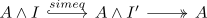
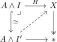

left homotopy into a fibrant object implies existence of a very good homotopy
Proposition
Let $(\mathcal{C}, \mathcal{W}, \mathrm{Cof}, \mathrm{Fib})$ be a model category, $X$ a fibrant object Then any homotopy $H: A \wedge I \rightarrow X$ induces the existence of a very good left homotopy
Proof
w.l.o.g. we may assume that we have a good left homotopy $A \wedge I$ (cf. left homotopy implies good left homotopy) We may factor

(cf. factorization of a cylinder object as cylinder object) this becomes a very good cylinder object, since $A \coprod A \rightarrow A \wedge I \rightarrow A \wedge I'$ is a composition of cofibrations.
Then we may find a lift

which precisely gives a very good left homotopy